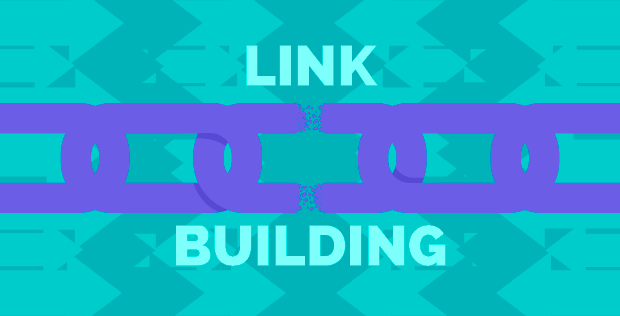
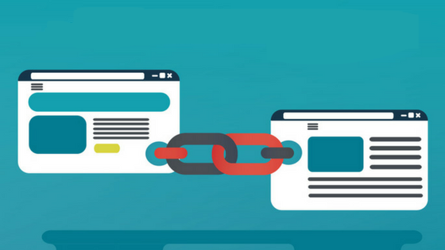
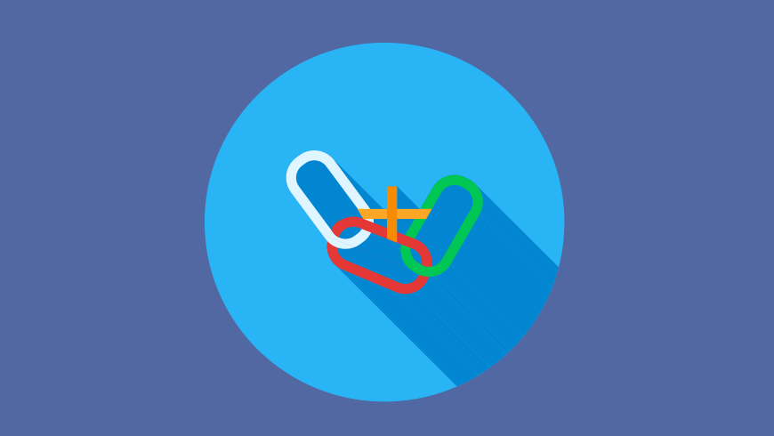
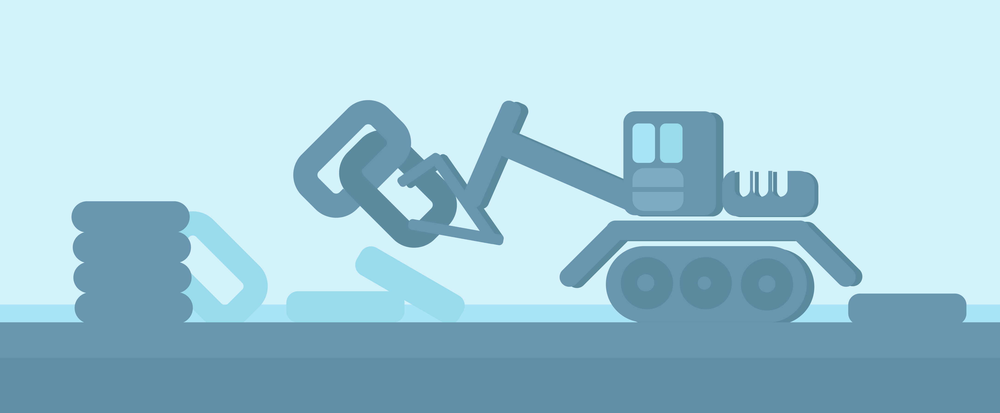

What should you know before starting link building? In this article we will discussLink building is one of the most important part of any SEO. Links will help your webpage be connected with other websites and therefore become more visible for search engines. However, not every link that bring value. It may also harm. You should know in advance link building techniques before starting such activity Websites to which your links lead should be trustworthy, have high reputation, shouldn’t be penalized from search engines etc.. Some websites have hundreds of anchor links to unknown or with bad ranking websites which does not bring any value to them. You should remember that your website should not only have internal links but also external links as backlinks have critical importance for the successful completion of your strategy. Today we will learn how to get most out of link building and how to choose high quality links. And remember before starting link building for SEO, you should have clear understanding of your link building strategy and have knowledge of link building techniques. 1. Quality of links While inserting links in your content always pay attention on their quality. Don’t put links that leads to websites with bad ranking. Always search high quality trustworthy websites. It is also a good idea if that website will be from the same area as your website. You should also remember that less amount of high quality links has better effect on the website’s ranking than lots of links of websites with bad reputation or with low quality content. To imagine how it is working, lets imagine than you need an advice and 10 people, whom you don’t trust, offer you to do something. And there are also few other people, whom you trust much, whose reputation is high, offer you another solution. Which one will you follow? Definitely to the advice of people with high reputation, although their number is less. The same is here. 2. How many links to insert ? How many links to attach to your website? Should they lead to one website or to many websites, or should they be backlinks from one website or from different ones? Understanding how search engines works, it becomes obvious that number of links attached to your website also matters. However, you should understand link building techniques. It is not only quantity of links that matters but also their quality. Your website may have hundreds of links coming from one website or hundreds of them coming from hundred different websites. According to search engine algorithms second one is more preferable as it will help your website to be ranked higher. And don’t expect that only having backlinks from well-known websites such as Facebook, Twitter, Instagram, Google+ etc. will bring you competitive advantage, as all of the websites are connected with them. However, you should also be connected with them not to be behind of your competitors. You should also be aware that, for example backlinks from Facebook will not help you get indexed higher, but it will help you get visitors from that website. This is also a case for other well known websites. 3. Structure of links While creating links for your website you should remember about the importance of words. URL’s that you create, should not be too long and they should include main words describing your content or product. Avoid using understandable signs. Separate words by “-” or by “_”. URL’s with proper description and unnecessary signs, will help your website ranking. For example instead of using www.example.com/345/21Link8&Buiilding use www.example.com/link-building. ConclusionHope we gave you basic understanding of link building techniques. There are also a lot of stuff to discuss about link building strategy to get the most out of it. All that and more will be discussed in further topics.
However, while creating link building strategy for SEO it is worth to talk to professionals in advance, not to go round and round, but to get results faster. It will also help you staying away from bad websites as well as unnecessary spent time and money. What to read next: 7 Ways Of Writing Catching Headline |